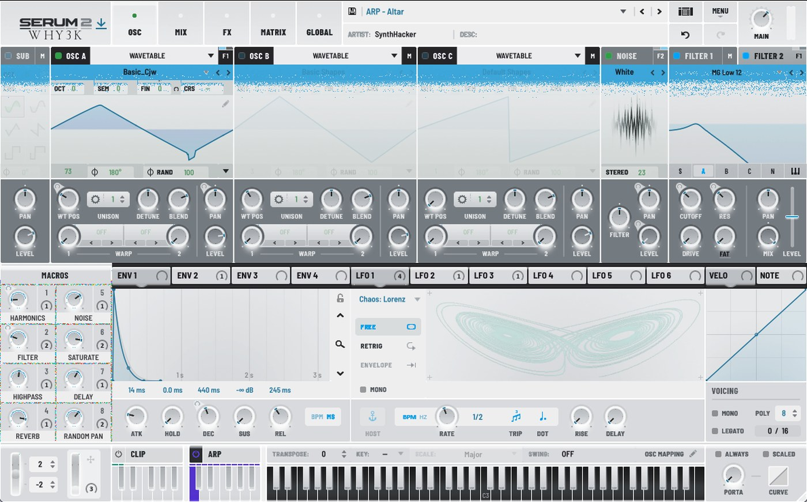
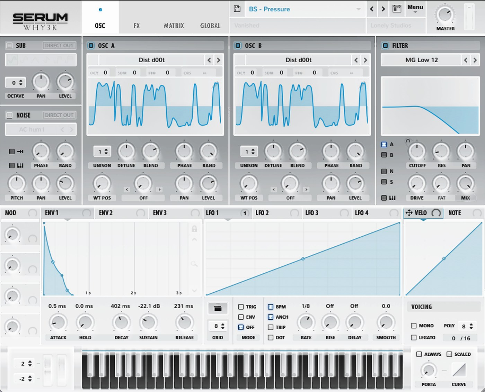

WHY3K が Serum で使っているスキンです。白い紙に墨の線、手応えのあるところだけ水色。 朱は警告と過大入力のときだけ出ます。Serum 2 と Serum（1系）、どちらもあります。


Serum 2 版には Paper と Glow を入れてあります。両方入れておいて、 Serum のメニューで切り替えられます。
Paper — 全部が白い紙。いちばん素直で、明るい部屋でよく見えます。
Glow — 波形・LFO・スペクトラムの表示窓だけ墨にして、その中を 光る水色で描きます。紙の中に暗いディスプレイが嵌まっている見え方です。
ZIP を解凍して、中の WHY3K Paper フォルダを Skins フォルダへ
フォルダごとコピーするだけです。ターミナルは要りません。
Serum 2 はここ：
/Library/Audio/Presets/Xfer Records/Serum 2 Presets/Skins/
Serum（1系）はここ：
/Library/Audio/Presets/Xfer Records/Serum Presets/Skins/
⌘⇧G を押して、上のパスを貼り付けて移動WHY3K Paper（Serum 2 なら WHY3K Paper Glow も）をそこへコピーMENU → Skins → WHY3K Paper を選ぶtheme.json / colormap.png）を起動したときにしか読みません。
スキンを切り替えただけだと、絵は新しくなっても色が前のまま、ということが起きます。
一覧に出てこない — 入れる場所が違う可能性があります。
Skins の直下に、フォルダごと（中の 1x / 2x が見える状態で）
置かれているか確かめてください。
文字や数字が粗く見える — Serum の表示倍率が 100% だと、等倍の絵が使われます。
MENU → 環境設定の Zoom を 125〜150% にすると、Retina 用の絵に切り替わって一段くっきりします。
（スキンには等倍と2倍の両方を入れてあります）
元に戻したい — MENU → Skins から Default を選べば戻ります。
入れたフォルダを消しても構いません。Serum 本体には何も書き換えていません。
このスキンは Serum に付属している画像をもとに、白い紙に合うように作り替えたものです。 Serum 本体および元の意匠の権利は Xfer Records にあります。個人で使う範囲でどうぞ。 再配布や販売はしないでください。